This package contains basic mathematical operations, such as summation and multiplication, and basic mathematical functions, such as sqrt and sin, as input/output blocks. All blocks of this library can be either connected with continuous blocks or with sampled-data blocks.
| Name | Description |
|---|---|
| 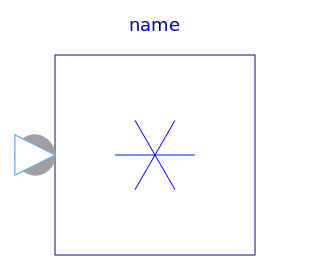 Conj | Output is equal to the conjugate complex input signal |
| 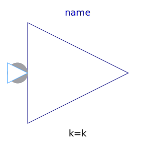 Gain | Output the product of a gain value with the input signal |
| Output the sum of the elements of the input vector | |
| 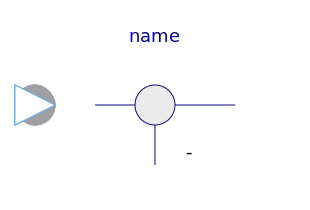 Feedback | Output difference between commanded input 1 and feedback input 2 |
| 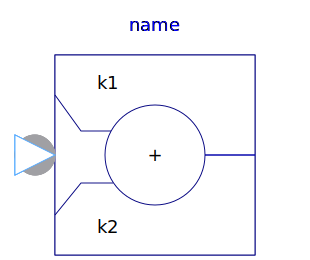 Add | Output the sum of the two inputs |
| Output the sum of the three inputs | |
| 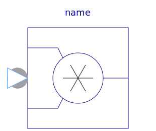 Product | Output product of the two inputs |
| 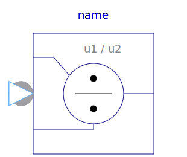 Division | Output first input divided by second input |
| 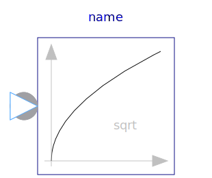 Sqrt | Output the square root of the input (= principal square root of complex number) |
| 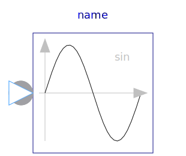 Sin | Output the sine of the input |
| 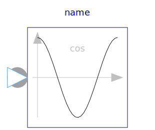 Cos | Output the cosine of the input |
| Output the tangent of the input | |
| 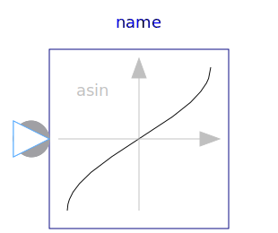 Asin | Output the arc sine of the input |
| 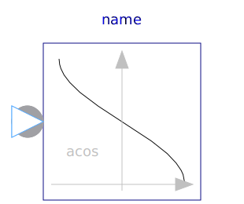 Acos | Output the arc cosine of the input |
| 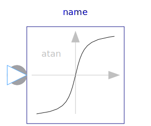 Atan | Output the arc tangent of the input |
| 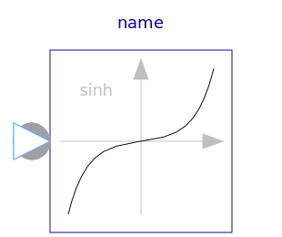 Sinh | Output the hyperbolic sine of the input |
| 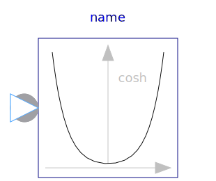 Cosh | Output the hyperbolic cosine of the input |
| 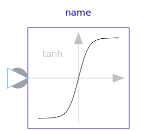 Tanh | Output the hyperbolic tangent of the input |
| 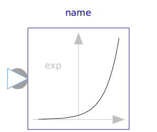 Exp | Output the exponential (base e) of the input |
| 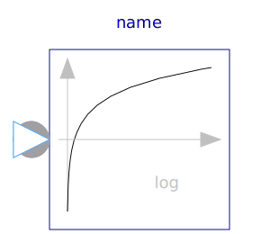 Log | Output the natural (base e) logarithm of the input (input <> '0' required) |
| 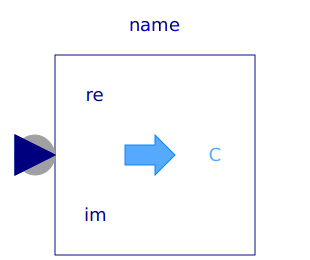 RealToComplex | Converts Cartesian representation to complex |
| Converts polar representation to complex | |
| 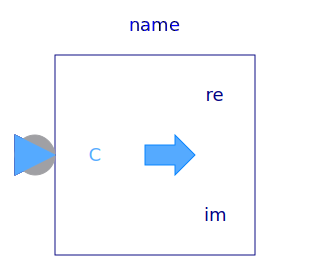 ComplexToReal | Converts complex to Cartesian representation |
| ComplexToPolar | Converts complex to polar representation |
| 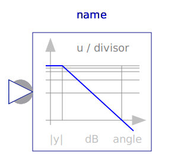 Bode | Calculate quantities to plot Bode diagram |
| 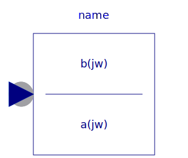 TransferFunction | Complex Transfer Function |